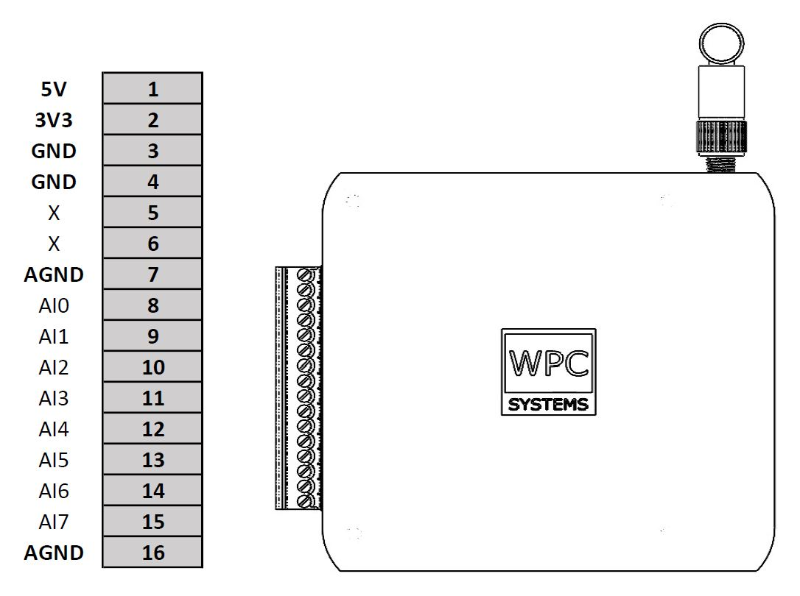

Wifi-DAQ-E3-A
Device pinout
{kind=link}
API function description
- class pywpc.WifiDAQE3A
This device Wifi-DAQ-E3-A has 8ch 16-bit +/-10V analog input
AI : port1
Methods
AI_clearBufferStatus(port)Clear AI buffer counter of remote device.
AI_close(port)Close AI port on WPC DAQ device.
Get AI port.
AI_open(port)Open AI port on WPC DAQ device.
AI_readBufferStatus(port)Get AI buffer status of remote device.
AI_readOnDemand(port)Read one sample from AI port.
AI_readStreaming(port, num_of_samples[, delay])Read multiple samples from AI port.
AI_setMode(port, mode)Configure acquisition mode setting.
AI_setNumSamples(port, sample_points)Configure sample points to acquisition for N-samples mode.
AI_setSamplingRate(port, sampling_rate)Configure sampling rate to acquisition setting for N-samples and continuous mode.
AI_start(port)Start N samples or continuous AI acquisition.
AI_stop(port)Stop N samples or continuous AI acquisition.
Get device firmware information.
Get geteway from the connected web device.
Get IP address and subnet mask from the connected web device.
Get MAC address from the connected web device.
Sys_getPinModeInPort(port)Get pin mode in specific port.
Get date and time to connected WPC device.
Get serial number from the connected WPC device.
Reboot from the connected WPC device.
Reboot on bootloader from the connected WPC device.
Sys_setIPAddrAndSubmask(ip_addr[, subnet_mask])Set IP address and subnet mask to the connected web device.
Sys_setRTC(year, month, day, hour, minute, ...)Set date and time to connected WPC device.
Get bandwidth from Wifi device.
Get Wifi reconnection times and AP stay time.
Get acceleration from sensor if the Wifi device has one.
Get volatge status of battery if the Wifi device has one.
Get Wifi RSSI signal of the connected Wifi device.
Get temperature from thermal sensor if the Wifi device has one.
Change from station mode to AP mode for Wifi device.
close()Close web device handle.
connect(ip)Connect to web device.
Disconnect web device.
- async AI_clearBufferStatus(port)
Clear AI buffer counter of remote device.
- Parameters
- portint
Available port number depends on WPC DAQ device.
- Returns
- statusint
0 if success, error otherwise.
- async AI_close(port)
Close AI port on WPC DAQ device.
- Parameters
- portint
Available port number depends on WPC DAQ device.
- Returns
- statusint
0 if success, error otherwise.
- AI_getPort()
Get AI port.
- Returns
- portlist
AI port.
- async AI_open(port)
Open AI port on WPC DAQ device.
- Parameters
- portint
Available port number depends on WPC DAQ device.
- Returns
- statusint
0 if success, error otherwise.
- async AI_readBufferStatus(port)
Get AI buffer status of remote device.
- Parameters
- portint
Available port number depends on WPC DAQ device.
- Returns
- buffer_statuslist of 4 positive int.
buffer_status[0]: Buffer zero timesbuffer_status[1]: Buffer full timesbuffer_status[2]: Buffer remainbuffer_status[3]: Buffer max values
- async AI_readOnDemand(port)
Read one sample from AI port. This is use in “on demand” mode.
- Parameters
- portint
Available port number depends on WPC DAQ device.
- Returns
- samplelist of float.
List of values measured from channels.
- async AI_readStreaming(port, num_of_samples, delay=0.005)
Read multiple samples from AI port.
- Parameters
- portint
Available port number depends on WPC DAQ device.
- get_data_timesint
Amount of data to get from the function call.
- delayfloat
Time delay before getting data.
- Returns
- sample_listlist of list of float.
AI data where each element of
sample_listis a sample.A sample is a list of values measured from different channels.
- async AI_setMode(port, mode)
Configure acquisition mode setting.
- Parameters
- portint
Available port number depends on WPC DAQ device.
- modeint
0 : On demand, 1 : N-samples, 2 : Continuous.
- Returns
- statusint
0 if success, error otherwise.
- async AI_setNumSamples(port, sample_points)
Configure sample points to acquisition for N-samples mode.
- Parameters
- portint
Available port number depends on WPC DAQ device.
- sample_pointsint
Number of sample points.
- Returns
- statusint
0 if success, error otherwise.
- async AI_setSamplingRate(port, sampling_rate)
Configure sampling rate to acquisition setting for N-samples and continuous mode.
- Parameters
- portint
Available port number depends on WPC DAQ device.
- sampling_rateint or float
AI sampling rate.
- Returns
- statusint
0 if success, error otherwise.
- async AI_start(port)
Start N samples or continuous AI acquisition.
- Parameters
- portint
Available port number depends on WPC DAQ device.
- async AI_stop(port)
Stop N samples or continuous AI acquisition.
- Parameters
- portint
Available port number depends on WPC DAQ device.
- Returns
- statusint
0 if success, error otherwise.
- async Sys_getDriverInfo()
Get device firmware information.
- Returns
- driver_infolist of three string
driver_info[0]: Model namedriver_info[1]: Modedriver_info[2]: Firmware version
- async Sys_getGateway()
Get geteway from the connected web device.
- Returns
- gatewaystr of 4 int separated by period.
Network gateway.
- async Sys_getIPAddrAndSubmask()
Get IP address and subnet mask from the connected web device.
- Returns
- network_infolist of 2 str.
network_info[0]: IP addressnetwork_info[1]: subnet mask
- async Sys_getMACAddr()
Get MAC address from the connected web device.
- Returns
- mac_addrstr of 6 int separated by colon.
MAC address.
- async Sys_getPinModeInPort(port)
Get pin mode in specific port.
- Returns
- pinsint
how many pins in specific port.
- pin_modelist of 8 string
[pin0, pin1 ,……pin7]
pinmode : Disabled, Idle, DI, DO, UART, I2C, SPI, CAN, PWM and ADC.
- async Sys_getRTC()
Get date and time to connected WPC device.
- Returns
- str_str
Date and time represented by “A-B-C, D:E:F”. - “A” is year. - “B” is month. - “C” is day. - “D” is hour. - “E” is minute. - “F” is second.
- async Sys_getSerialNumber()
Get serial number from the connected WPC device.
- Returns
- str_str
Serial number represented by string of 8 characters.
- async Sys_reboot()
Reboot from the connected WPC device.
- Returns
- statusint
0 if success, error otherwise.
- async Sys_rebootOnBootloader()
Reboot on bootloader from the connected WPC device.
- Returns
- statusint
0 if success, error otherwise.
- async Sys_setIPAddrAndSubmask(ip_addr, subnet_mask='255.255.255.0')
Set IP address and subnet mask to the connected web device.
- Parameters
- ip_addrstr of 4 int separated by period.
IP network address.
- subnet_maskstr of 4 int separated by period.
Subnet mask. (default: “255.255.255.0”)
- Returns
- statusint
0 if success, error otherwise.
- async Sys_setRTC(year, month, day, hour, minute, second)
Set date and time to connected WPC device.
- Parameters
- yearint
year (CE).
- monthint
month (1~12).
- dayint
day (1~31).
- hourint
hour (24-hour clock) (0~23).
- minuteint
minute (0~59).
- secondint
second (0~59).
- Returns
- statusint
0 : Success, Others : Error.
- async Wifi_getWifiBandwidth()
Get bandwidth from Wifi device.
- Returns
- bandwidthint
1 : Bandwidth is HT20
2 : Bandwidth is HT40
- async Wifi_getWifiConfiguration()
Get Wifi reconnection times and AP stay time.
- Returns
- wifi_configurationlist of 2 positive int.
wifi_configuration[0]: Wifi connection retry timeswifi_configuration[1]: Time of staying in AP mode in second
- async Wifi_readAccleration()
Get acceleration from sensor if the Wifi device has one.
- Returns
- accleration_three_axislist of 3 float
Accelerations in x-, y-, and z-axis.
- async Wifi_readBattery()
Get volatge status of battery if the Wifi device has one.
- Returns
- batteryint
Battery level in mV.
- async Wifi_readRSSI()
Get Wifi RSSI signal of the connected Wifi device.
- Returns
- rssiint
RSSI signal in dBm.
- async Wifi_readThermo()
Get temperature from thermal sensor if the Wifi device has one.
- Returns
- thermoint
Temperature in Celsius.
- async Wifi_setAP()
Change from station mode to AP mode for Wifi device.
- Returns
- statusint
0 if success, error otherwise.
- close()
Close web device handle.
- Returns
- statusint
0 if success, error otherwise.
- connect(ip)
Connect to web device.
- Parameters
- IPstr of 4 int separated by period.
IP network address.
- Returns
- statusint
0 if success, error otherwise.
- disconnect()
Disconnect web device.
- Returns
- statusint
0 if success, error otherwise.